Over 2.5 years, shaping a fast-moving retail brand's visual presence across catalogs, packaging, outdoor advertising, stationery, and in-store materials — one cohesive experience across every touchpoint.
Over 2.5 years, I helped shape My Market's visual presence across catalogs, packaging, outdoor advertising, stationery, and in-store materials. The goal was simple: create a more cohesive brand experience across every customer touchpoint.
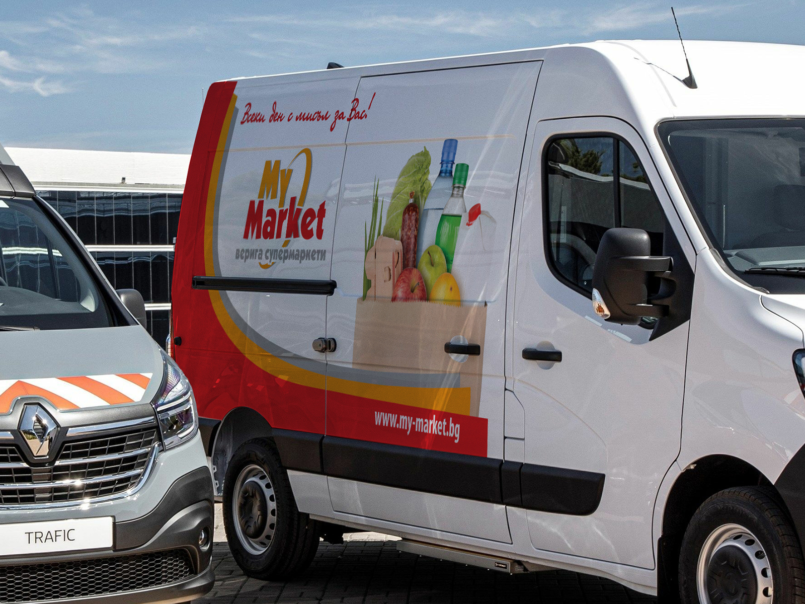
My Market — 01+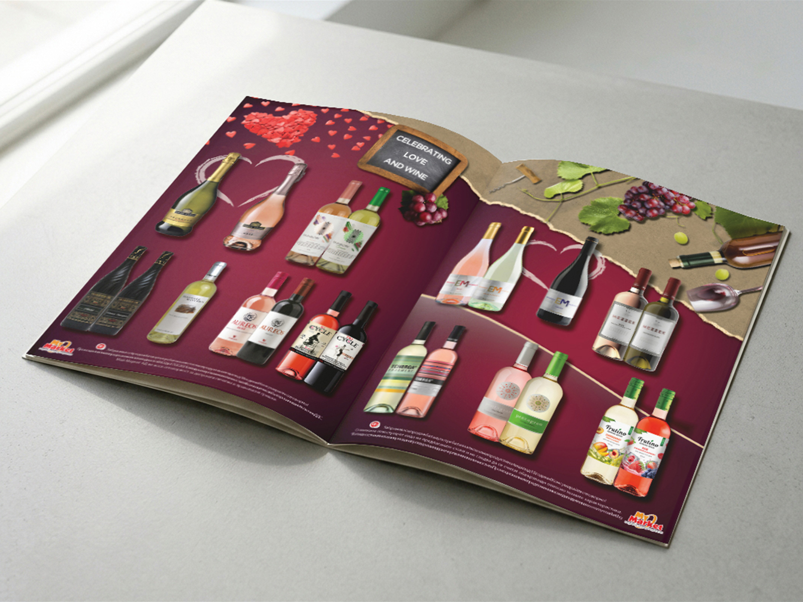
My Market — 02+Retail never stands still. With bi-weekly campaigns, seasonal promotions, and hundreds of assets moving through production, the challenge was keeping everything fresh while maintaining a consistent brand identity.
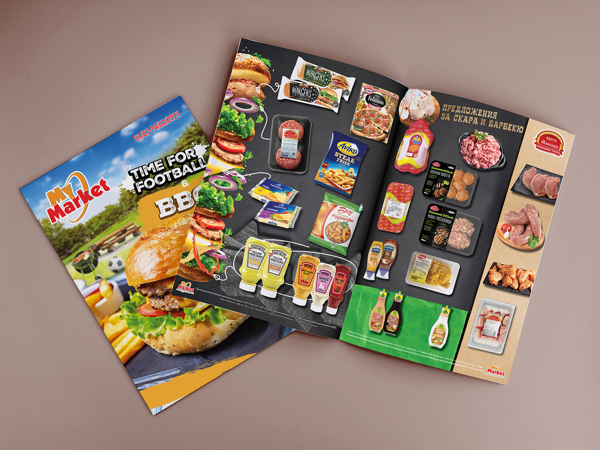
My Market — 03+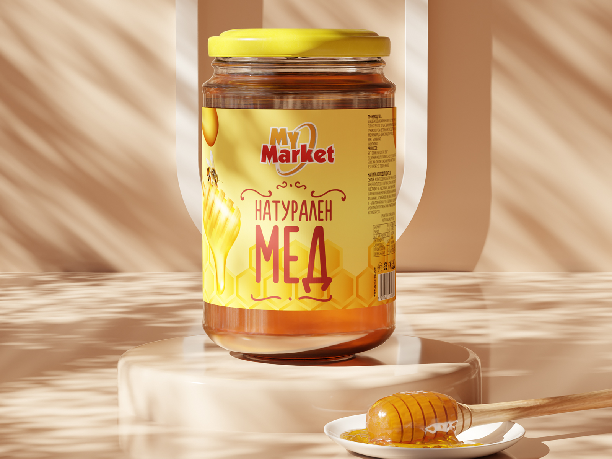
My Market — 05+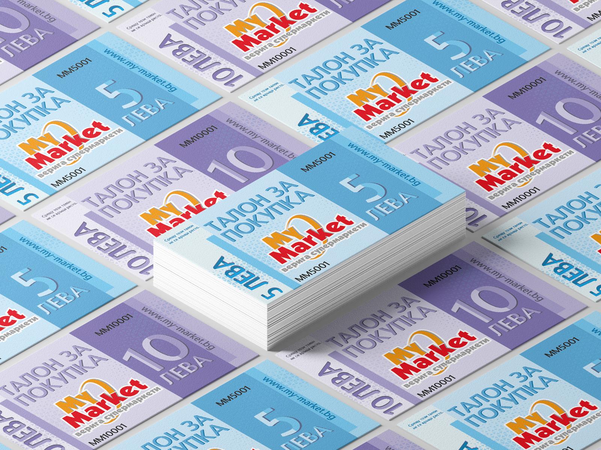
My Market — 06+I developed and delivered a wide range of print and brand assets — from 16–52 page catalogs and product packaging to billboards, fleet graphics, loyalty cards, and promotional materials. Each piece was designed within the brand framework while introducing campaign-specific concepts, themes, and storytelling that kept the communication engaging and relevant.
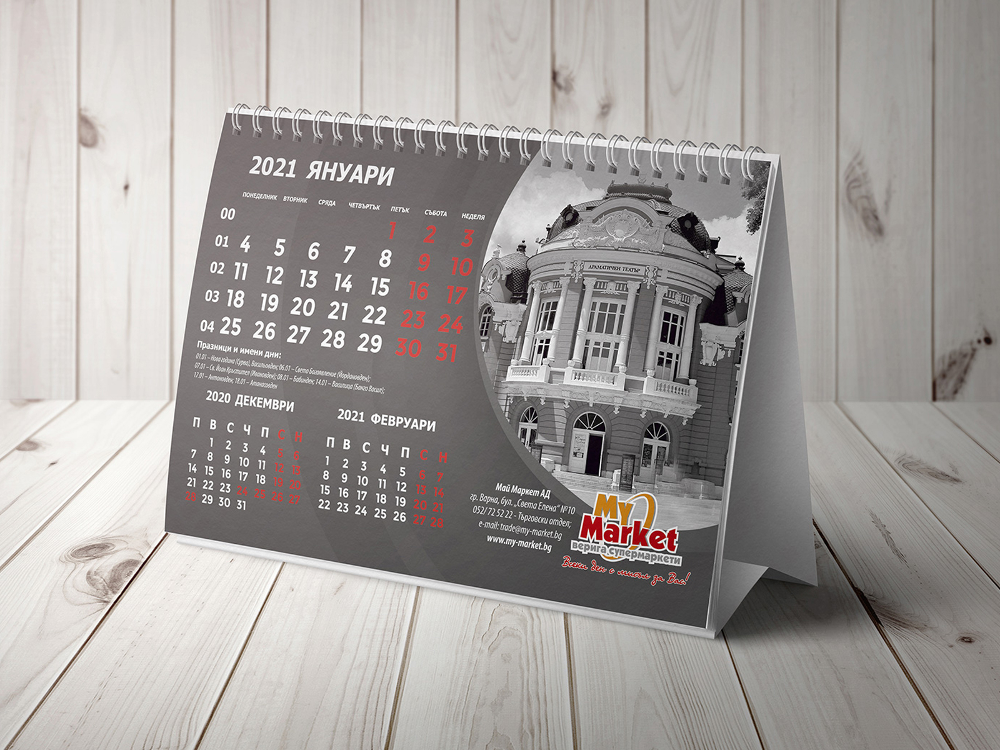
My Market — 07+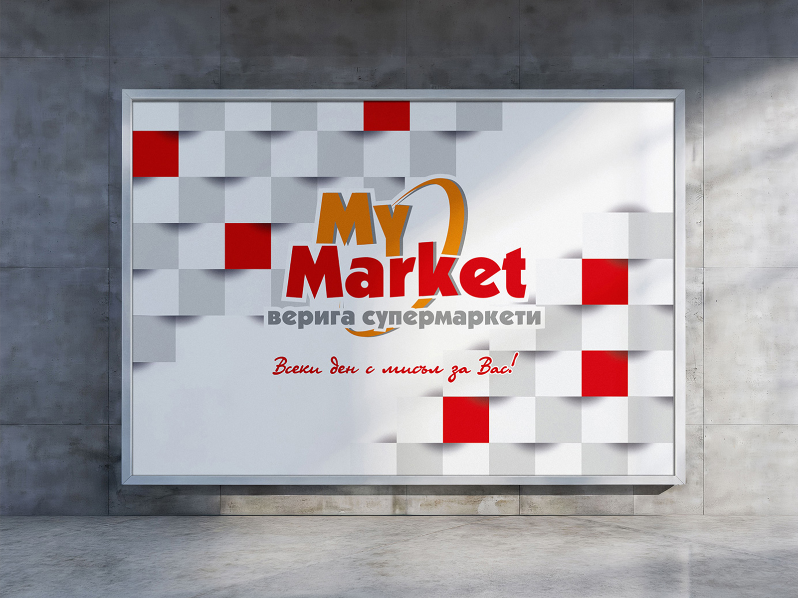
My Market — 08+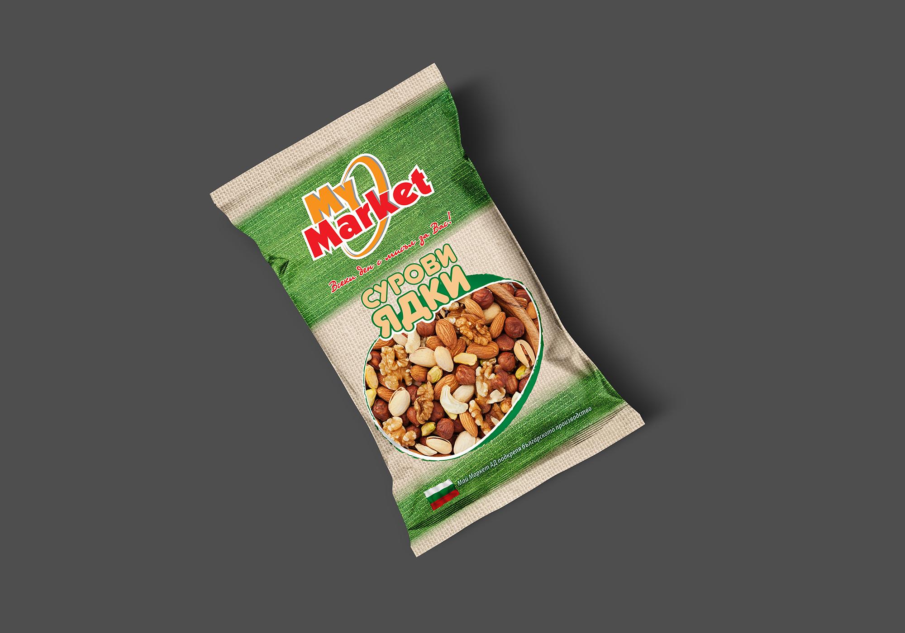
My Market — 09+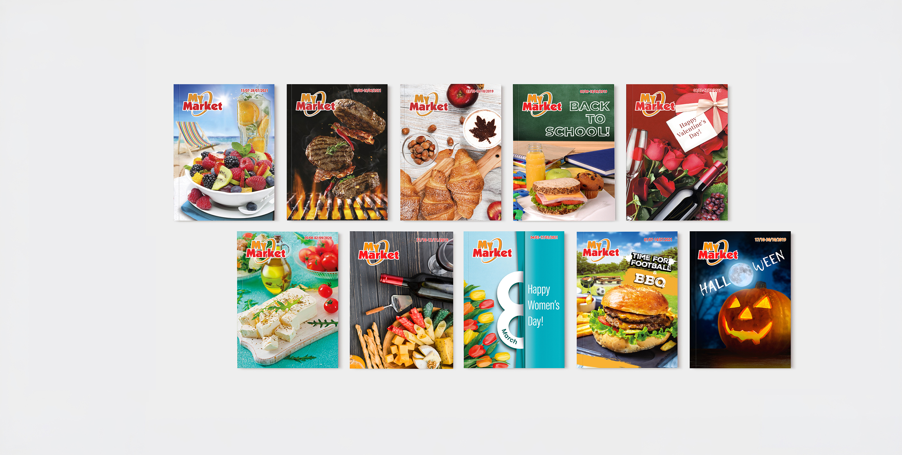
My Market — 10+A neighbourhood brand should feel like it grew there.
A stronger and more unified brand presence across print, retail, outdoor, and digital channels — supporting ongoing promotional activity at scale.
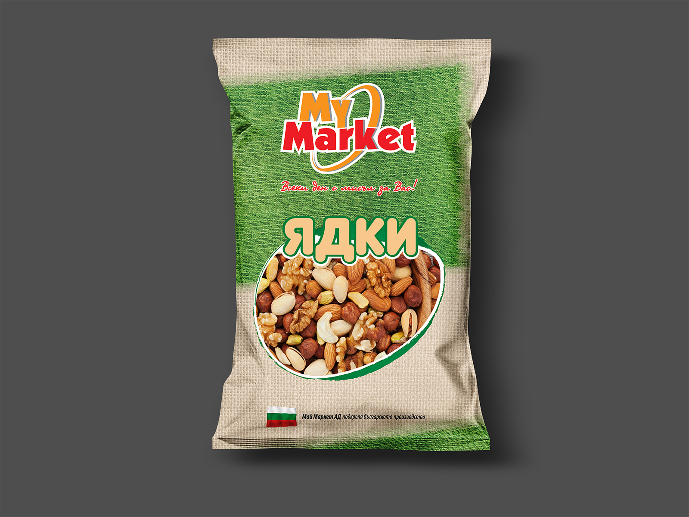
My Market — 11+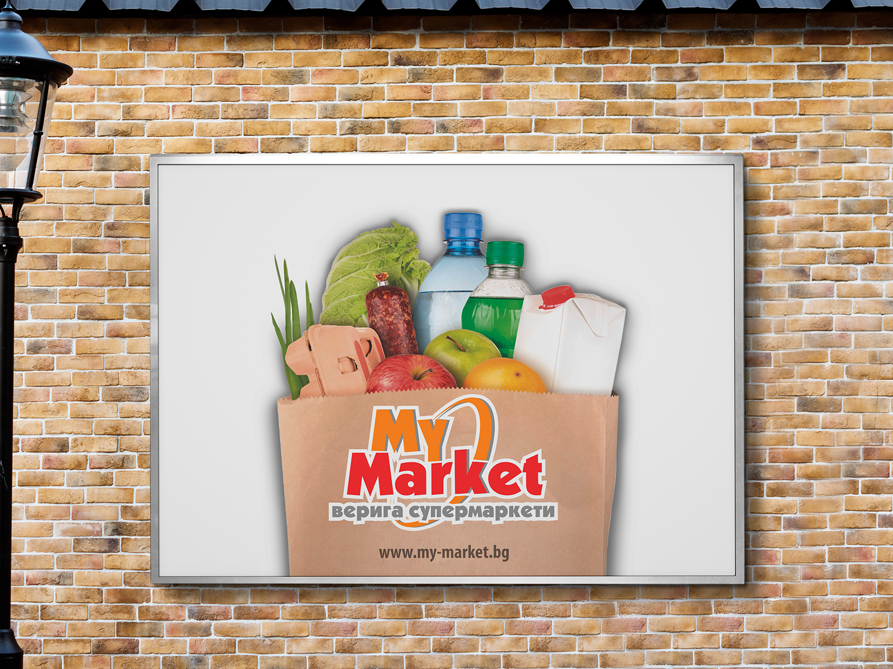
My Market — 12+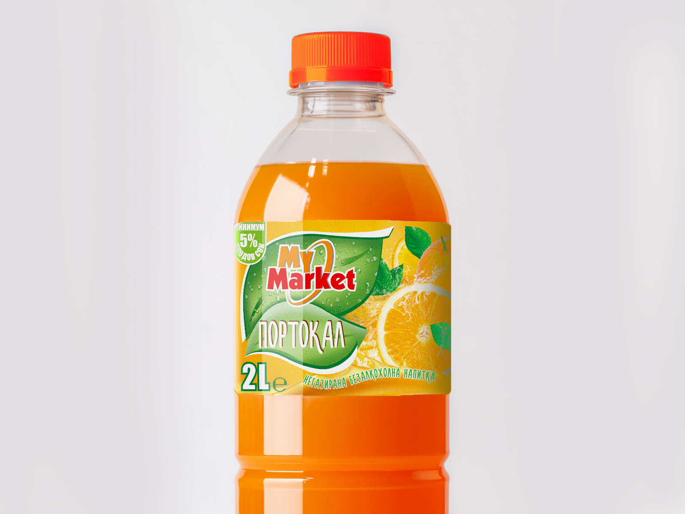
My Market — 13+This project reinforced the value of systems thinking. Good retail design isn't about a single standout asset — it's about making hundreds of touchpoints feel like they're part of the same conversation.
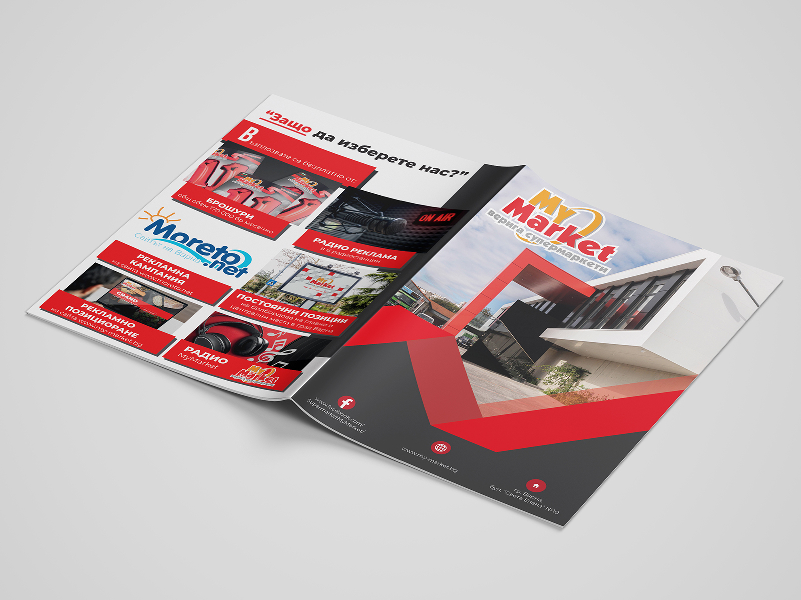
My Market — Final+